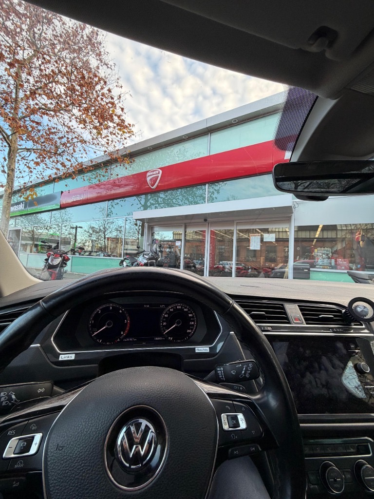
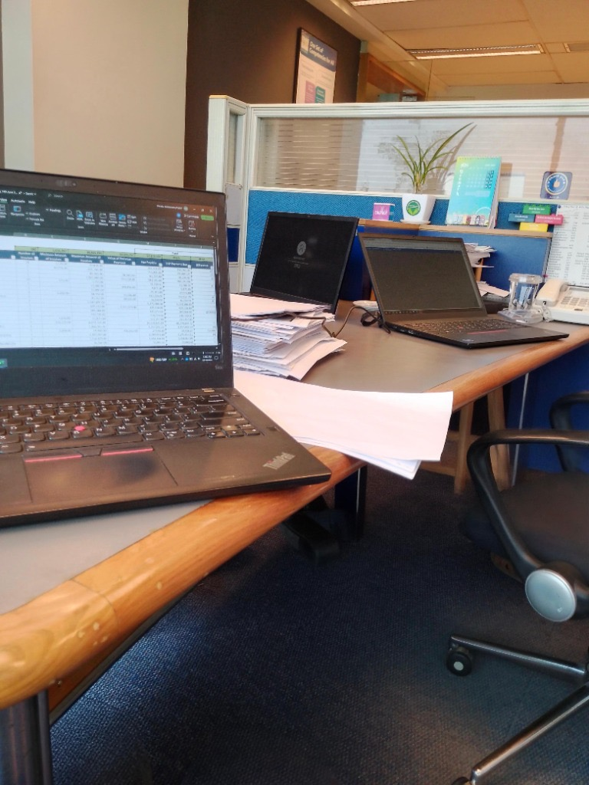
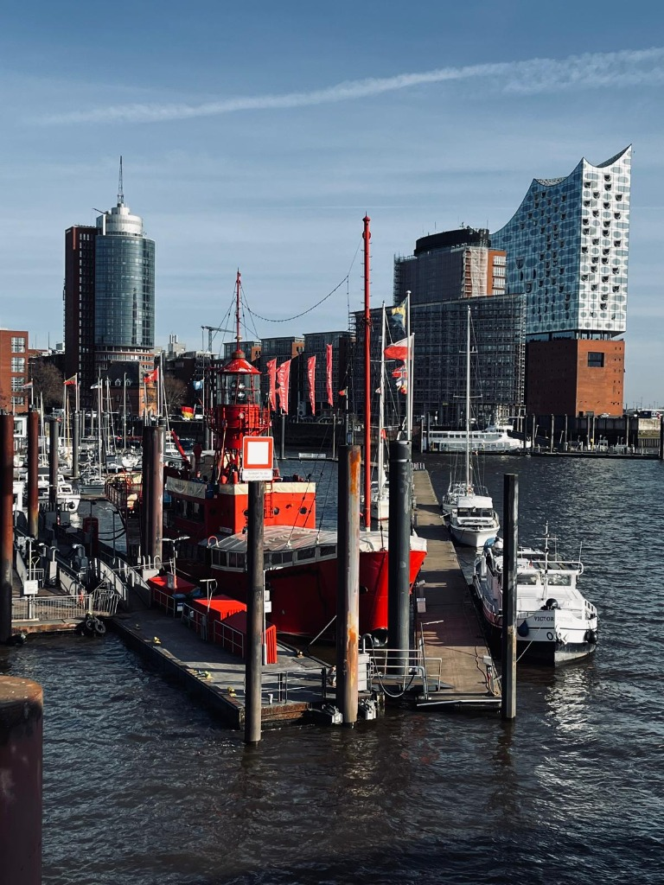

Bachelor of Science in Accountancy, Management and Law
Institute of Business Management. An academic foundation in accounting and business, with a broad grounding in management and law.
I bring an academic foundation in accountancy and business, finance-related work experience, and an analytical approach to the way organisations operate. I am interested in opportunities across finance and supply chain.
Based in Germany · Open to Werkstudent opportunities

A new place to learn, build experience and find my next opportunity.
My journey from Karachi to Berlin has taken me from studying Accountancy, Management and Law to gaining experience in sales operations and finance, and now to master's studies in European Business Management at TH Wildau.
That path has shaped my interest in how organisations make decisions and keep work moving. I am exploring finance and supply chain as distinct career directions, bringing a shared interest in sound analysis, reliable processes and business performance.
A concise view of the education and work experiences that have informed my professional direction.
Institute of Business Management. An academic foundation in accounting and business, with a broad grounding in management and law.
Two and a half years at Breakthru (Apexchat), working with US clients and using Salesforce CRM.
Exposure to vendor and payment operations using SAP, seeing how finance processes connect across day-to-day business activity.
TH Wildau, with a specialisation in Marketing and Sustainability. Moving to Germany broadened my academic and international perspective.
Overnight reconciliation and daily close across a multi-property portfolio, cross-checking revenue and cash records, resolving discrepancies before reporting, and documenting handoffs for the next day.
Finance and supply chain are separate professional interests, grounded in business study and a curiosity about how organisations perform.
Practical exposure to vendor and payment operations, backed by an academic accountancy foundation.
Demonstrated: Finance internship experience involving vendor and payment operations in SAP; bachelor's study in Accountancy, Management and Law.
Interested in: Financial operations, reporting and analytical work that supports well-informed business decisions.

A developing career interest in procurement, logistics and the processes that help goods move reliably.
Transferable foundation: Business studies, client-facing operations experience and familiarity with business systems.
Currently developing: Deeper knowledge of procurement, supplier performance, logistics and inventory analysis. These are areas of interest, not claimed professional experience.

Advanced Excel and PowerPoint · SAP (vendor and payment processes) · Salesforce CRM · Zapier automation · AI-assisted workflows · Google Workspace
English (C1 / fluent) · Urdu (native) · German (conversational)
Portfolio project concepts designed to turn business questions into clear, useful analysis. No results are presented until the work is completed and verified.
A planned analysis of invoice ageing, vendor balances, payment priorities and expenses using a clearly documented sample dataset.
A planned exploration of inventory levels, supplier lead times and delivery performance, with stockout analysis as a potential extension.
These are planned portfolio case studies, not completed client or employer projects. Add real datasets, analysis, findings, screenshots and repository links when available.
Cars, roads and the feeling of setting out are a genuine part of who I am — a personal interest, not my professional specialisation.
A few road-and-car scenes that capture the atmosphere I enjoy. Select an image to view it larger.
The cockpit, driving and workspace photographs are personal images.
I am interested in opportunities where financial understanding, analytical thinking and operational execution can create business value.